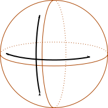
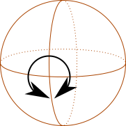
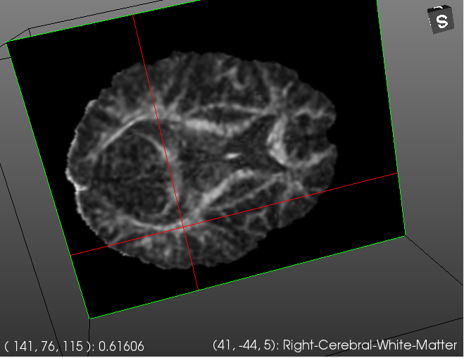
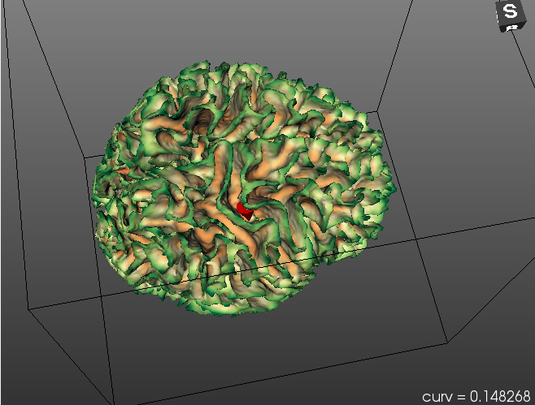
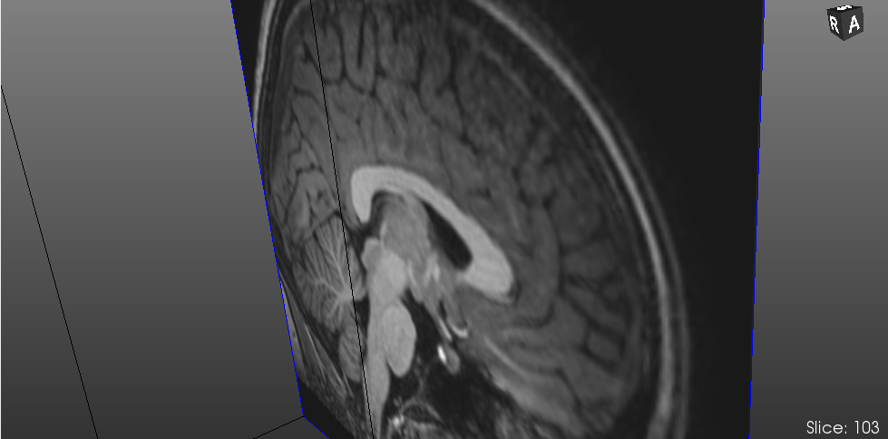
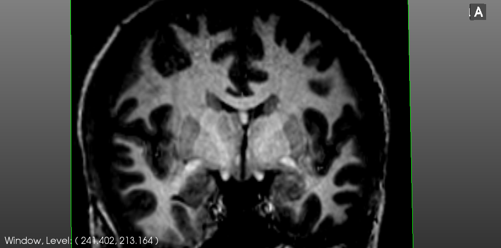

Navigating 3d views
Braviz uses vtk for displaying 3d data. In particular we use an interaction style called
trackball camera.
The mouse is used to control the camera which moves on a sphere around the view.
Rotating

To rotate the camera to the left or to the right, or to the top or the bottom; click and hold the left mouse button, outside from any object, and
drag it.

To spin the camera around its own axis, press ctrl while dragging the mouse. Remember that you must start the action
away from any image or surface.
Zooming
Moving the camera further or closer to the scene.
- Spin the mouse wheel
- On some touchpads you can do a pinch gesture
- Right click outside any object and drag the mouse up or down
- Hold
ctrl+shift and drag with the left mouse button
Panning
To move the camera parallel to the view plane without changing its direction
- Press the middel mouse button (the wheel) and drag the mouse.
- Hold
shift and drag with the left mouse button.
As always the action must start away from any image or surface.
Querying images or surfaces

When you click and hold on an image, a red cursor will appear. The lower left corner will show
the voxel coordinates of the point, and the value of the image at that point,
the lower right corner will contain the mm. coordinates of the point and the label of the freesurfer
segmentation at that location.

Clicking and holding on a surface will make a red cone appear. This cone allows you to query for scalar
values at specific positions on the surface. The lower right corner will show the value at the cone tip.
Changing the image plane
If you have a three button mouse you can change the current image plane by pressing the middle button (the wheel),
holding, and dragging. The current slice will be shown on the lower right corner.

Adjusting window and level
For most image modalities you can adjust the window and level by right-clicking on the image, holding and dragging.
The current window and level values are shown on the lower left corner.

Reset camera
Click on the 3d view and press the r key to reset the camera.
{kind=link}
{kind=link}
{kind=link}
{kind=link}
{kind=link}
{kind=link}